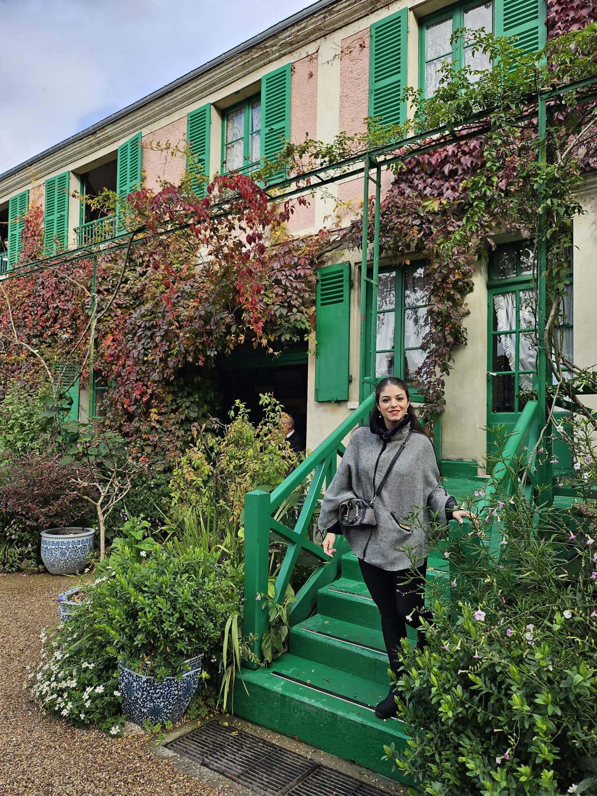
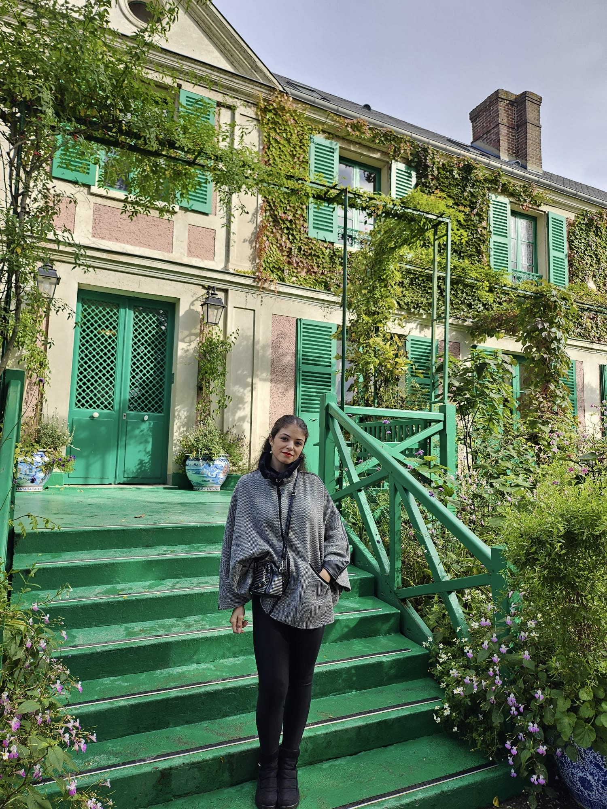
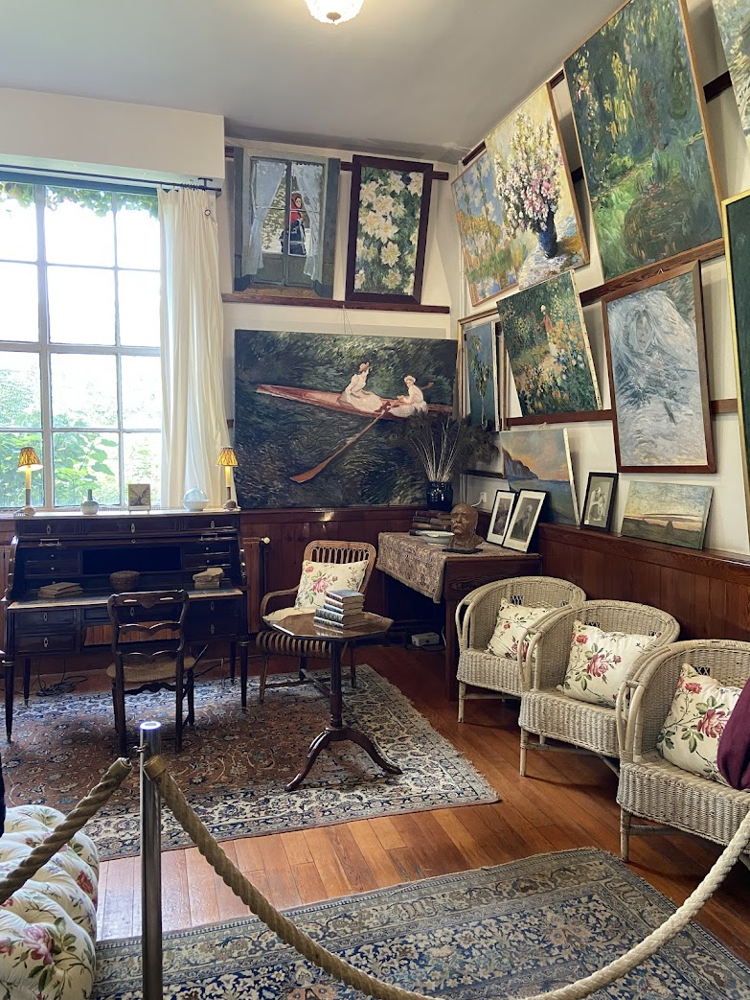
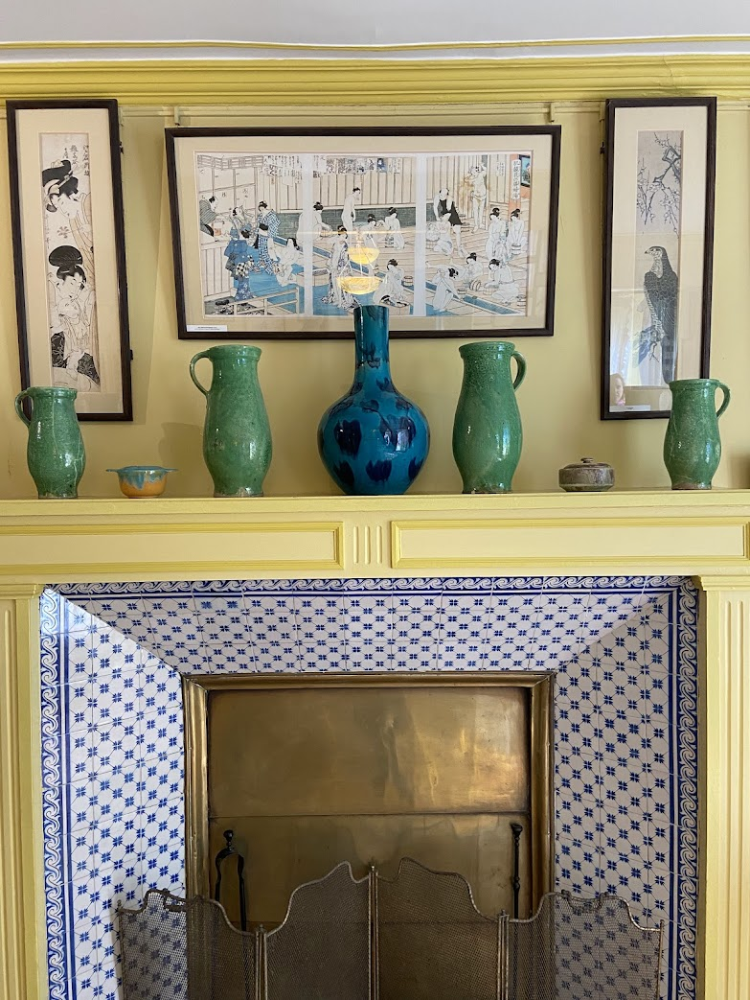
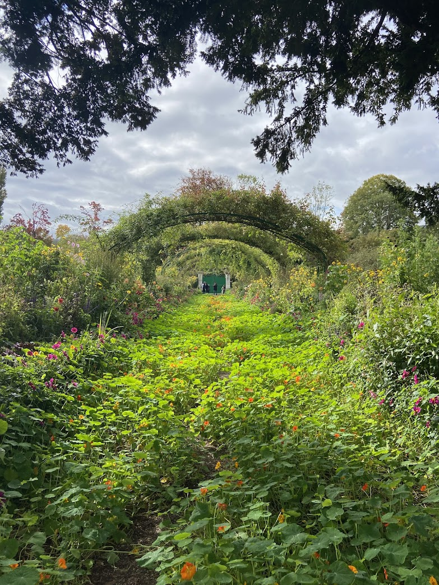
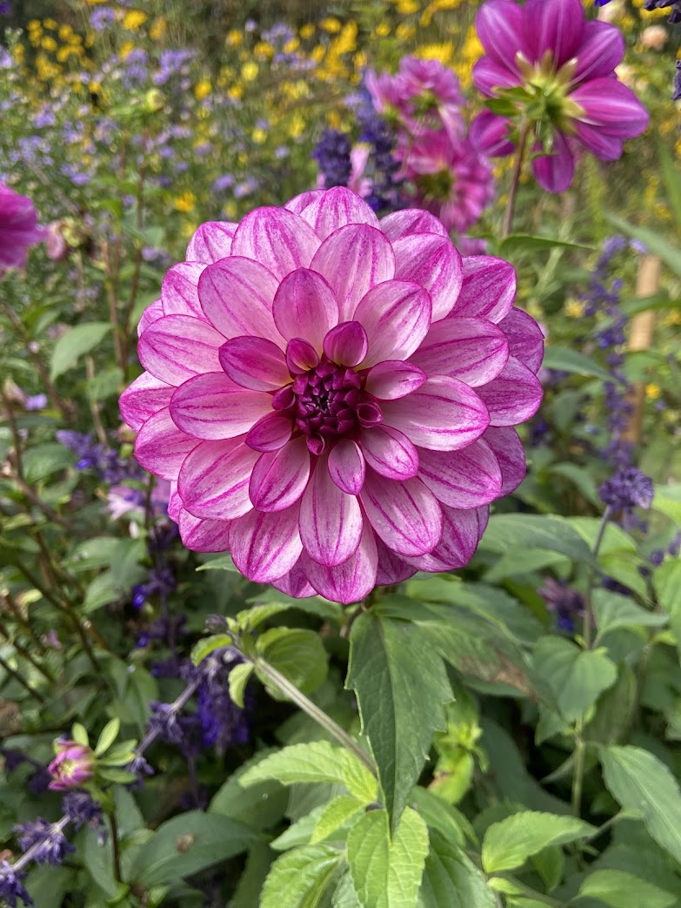

Introduction to Monet's Home
Claude Monet, the famous French painter, spent the last 43 years of his life in Giverny, a charming village in Normandy. His house, surrounded by beautiful gardens, became a true sanctuary for his artistic soul. Today, the house and gardens remain a testament to Monet's passion for nature and its influence on his iconic paintings.


The House Interior
The interior of Monet's home reflects his love for color and light. The rooms are filled with vibrant, eclectic furniture, and his personal art collection adorns the walls. Walking through the house feels like stepping into the world of the artist himself, surrounded by the works and memories that shaped his life.


The Famous Garden
Monet’s garden is one of the most famous in the world. It's divided into two parts: the Clos Normand, in front of the house, and the Japanese-inspired water garden with its iconic lily pond. Monet found inspiration in these gardens, and they became the subject of many of his masterpieces, including the famous "Water Lilies" series.

